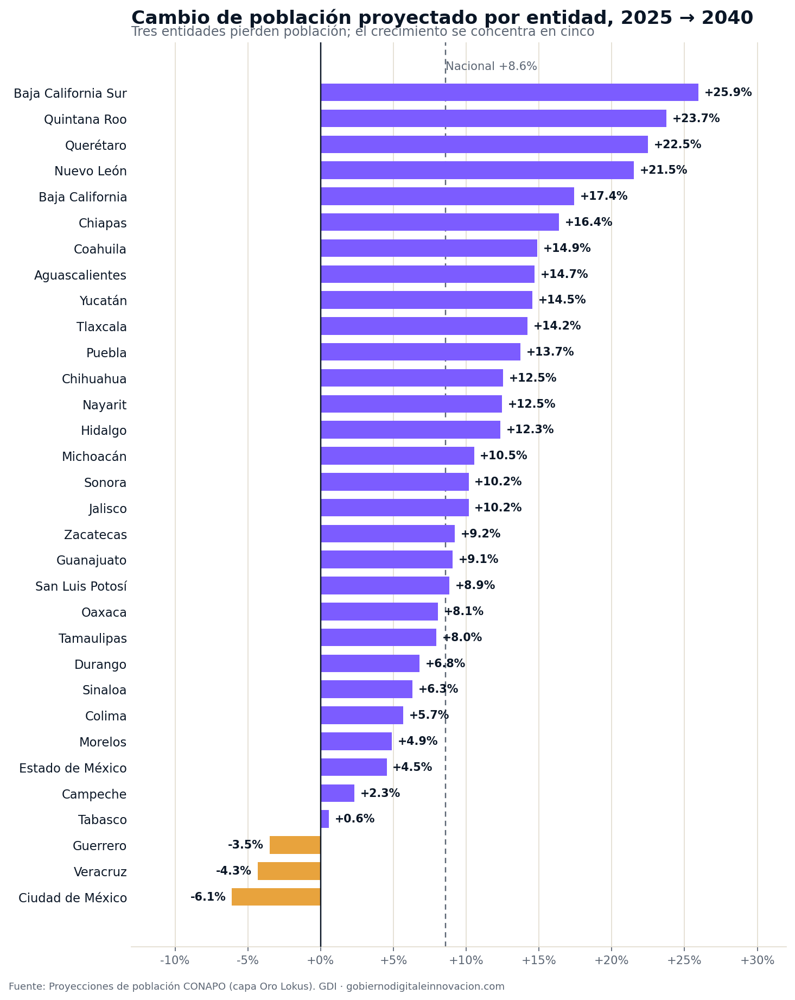
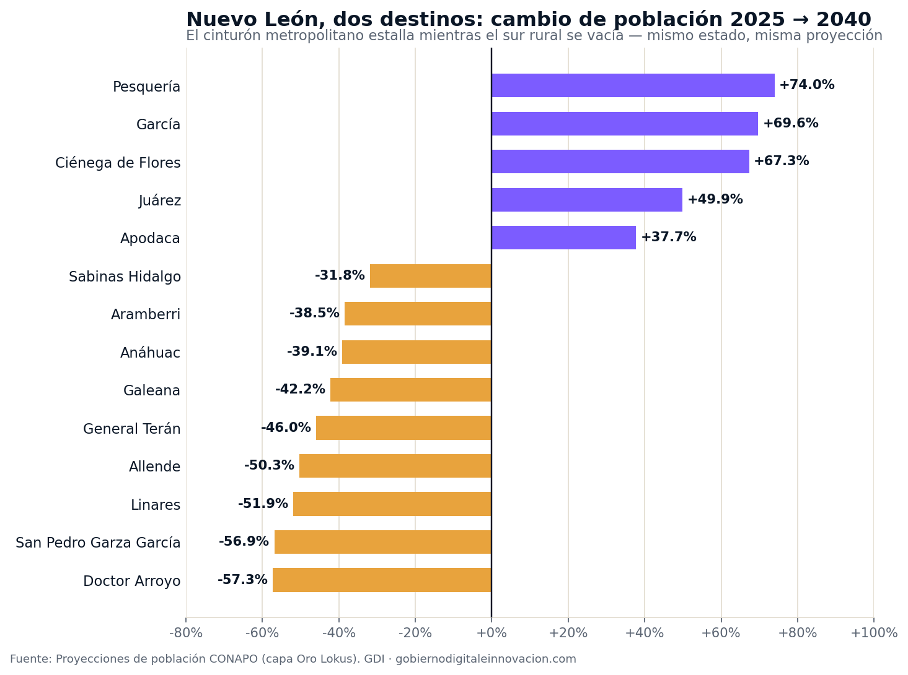

La pregunta con la que arrancó este análisis fue abierta: ¿qué municipios de México se están vaciando, cuáles estallan de gente rumbo a 2040, y qué tienen en común unos y otros? Para responderla ordenamos el universo completo — los 2,475 municipios con proyección de CONAPO y las 32 entidades — por su cambio poblacional proyectado entre 2025 y 2040, sin agrupar de antemano. El patrón que emergió no es el de un país que crece: es el de un país que se muda.
El agregado nacional engaña por tranquilo: México pasará de 132.8 a 144.2 millones de habitantes entre 2025 y 2040, un crecimiento de 8.6% en quince años, cada vez más lento. Pero debajo de esa suma hay dos países moviéndose en sentidos opuestos: 1,094 municipios — el 44% del total — perderán población, con una salida conjunta de 3 millones de personas, mientras los 1,381 restantes ganan 14.1 millones. Y esa ganancia está brutalmente concentrada: los 20 municipios que más crecen absorberán 5.15 millones de personas, el 36.5% de todo lo que ganan los municipios en crecimiento.
Primero el mapa estatal: tres entidades ya están en números rojos

En el extremo que crece, Baja California Sur (+25.9%), Quintana Roo (+23.7%), Querétaro (+22.5%), Nuevo León (+21.5%) y Baja California (+17.4%) — turismo y manufactura. En el que pierde, tres entidades verán reducirse su población: la Ciudad de México (−6.1%, unas 560 mil personas menos), Veracruz (−4.3%, −352 mil) y Guerrero (−3.5%, −127 mil). El Estado de México, que durante medio siglo fue la esponja demográfica del país, crecerá apenas 4.5% — la cuarta tasa más baja.
La CDMX además envejece más rápido que nadie: su edad mediana proyectada para 2040 es de 44 años (la nacional será 36) y su índice de envejecimiento de 175 — 175 personas de 65 años o más por cada 100 niños de 0 a 14. La capital del país perderá habitantes jóvenes y ganará dependientes mayores al mismo tiempo.
Municipios de México perderán población entre 2025 y 2040 según la proyección de CONAPO — el 44% del país se está vaciando mientras el crecimiento se concentra en unas cuantas periferias.
El mapa municipal: los núcleos se vacían, las periferias estallan
El hallazgo más contundente está en quiénes pierden. No son solo municipios rurales remotos: los que más población pierden en términos absolutos son los grandes núcleos urbanos del país. Iztapalapa — la demarcación más poblada de la Ciudad de México — perderá 184 mil habitantes; Gustavo A. Madero, 122 mil; Guadalajara (el municipio central, no su zona metropolitana), 68 mil; Coyoacán, Naucalpan, Cuauhtémoc y Tultitlán, entre 42 y 64 mil cada uno. Acapulco, ya golpeado, perderá 39 mil más.
| Municipio | Población 2025 | Población 2040 | Cambio |
|---|---|---|---|
| Iztapalapa, CDMX | 1,800,823 | 1,617,140 | −183,683 (−10.2%) |
| Gustavo A. Madero, CDMX | 1,149,481 | 1,027,004 | −122,477 (−10.7%) |
| San Pedro Garza García, NL | 123,389 | 53,225 | −70,164 (−56.9%) |
| Guadalajara, Jal. | 1,383,955 | 1,316,107 | −67,848 (−4.9%) |
| Coyoacán, CDMX | 602,223 | 538,574 | −63,649 (−10.6%) |
| Naucalpan, Méx. | 827,125 | 767,871 | −59,254 (−7.2%) |
| Valle de Chalco, Méx. | 382,565 | 324,641 | −57,924 (−15.1%) |
| Cuauhtémoc, CDMX | 535,550 | 479,080 | −56,470 (−10.5%) |
Los 8 municipios con mayor pérdida absoluta proyectada 2025→2040. Fuente: Proyecciones de población, CONAPO.
¿Y a dónde va la gente? A la periferia inmediata de esas mismas ciudades. Entre los municipios de más de 50 mil habitantes, los que más crecen son cinturones industriales y logísticos: Huehuetoca (+78.7%) en el Arco Norte mexiquense — mientras Naucalpan y Valle de Chalco, en el mismo estado, se vacían —; Pesquería (+74.0%), Ciénega de Flores (+67.3%) y García (+69.6%) en el anillo manufacturero de Monterrey; Kanasín (+72.1%) pegado a Mérida; Cuautlancingo (+71.0%) junto al clúster automotriz de Puebla; El Salto (+61.5%) en el corredor industrial de Guadalajara.
| Municipio | Población 2025 | Población 2040 | Cambio |
|---|---|---|---|
| Huehuetoca, Méx. | 206,810 | 369,661 | +78.7% |
| Pesquería, NL | 202,281 | 351,886 | +74.0% |
| Kanasín, Yuc. | 177,057 | 304,709 | +72.1% |
| Cuautlancingo, Pue. | 170,843 | 292,108 | +71.0% |
| García, NL | 495,731 | 840,854 | +69.6% (+345,123 personas) |
| Ciénega de Flores, NL | 92,740 | 155,184 | +67.3% |
| El Salto, Jal. | 294,703 | 475,964 | +61.5% |
Municipios de más de 50 mil habitantes (2025) con mayor crecimiento relativo proyectado 2025→2040. Fuente: CONAPO.
Nuevo León, el laboratorio del reacomodo
Ningún estado condensa mejor el fenómeno que Nuevo León. Es la cuarta entidad que más crece (+21.5%), y al mismo tiempo 8 de los 15 municipios que más rápido se vacían del país son suyos. Su cinturón metropolitano — García, Pesquería, Ciénega de Flores, Juárez, Apodaca — suma cientos de miles de habitantes nuevos, mientras su sur rural — Doctor Arroyo (−57.3%), Linares (−51.9%), Allende (−50.3%), Galeana (−42.2%) — pierde entre un tercio y más de la mitad de su gente.

Y dentro de ese mismo estado está el caso más llamativo del análisis: San Pedro Garza García — el municipio con menor pobreza del país (5.5%, CONEVAL 2020) — perdería el 57% de su población hacia 2040. Su trayectoria proyectada es una curva suave y consistente — ya pierde habitantes desde 2020 — y viene acompañada de un envejecimiento extremo: su edad mediana pasaría de 38 a 55 años, y uno de cada tres sampetrinos tendría 65 años o más. La proyección extrapola una dinámica real: los jóvenes no pueden quedarse a vivir donde crecieron y el municipio se convierte en un enclave de adultos mayores de alto ingreso.
Implicaciones para la gestión pública
1. Los planes de desarrollo están calibrados para un país que ya no existe
La mayoría de los instrumentos de planeación municipal — PMD, planes de centros de población, programas de infraestructura — asumen crecimiento poblacional por inercia. En 1,094 municipios esa premisa es falsa: la inversión pública dimensionada para una población que no llegará se convierte en infraestructura ociosa y gasto corriente insostenible. El primer paso de cualquier plan municipal debería ser saber en qué lado del mapa está el municipio.
2. Los receptores necesitan infraestructura anticipada, no reactiva
García, Huehuetoca, Kanasín, Pesquería o Cuautlancingo enfrentan el problema inverso: agua, drenaje, escuelas, salud, transporte y seguridad para decenas de miles de hogares nuevos. La experiencia mexicana de las últimas décadas — periferias dormitorio sin servicios ni empleo cercano — muestra lo que pasa cuando la vivienda llega antes que el Estado. La ventana para planear es ahora: la proyección da quince años de visibilidad.
3. Los que se vacían: base fiscal menguante y población que envejece
Perder población no libera recursos: los costos fijos de servicios se reparten entre menos contribuyentes, el predial y los derechos caen, y la población que se queda es la de mayor edad y mayor demanda de servicios de salud y cuidado. Los municipios en contracción necesitan estrategias de consolidación — no de expansión — y las haciendas estatales deben anticipar la presión sobre las transferencias.
4. El reacomodo es metropolitano: exige coordinación, no fronteras municipales
La gente que pierde Iztapalapa o Naucalpan no desaparece: se muda a Huehuetoca o Zumpango. La que pierde Guadalajara aparece en Tlajomulco y El Salto. Planear agua, movilidad o suelo municipio por municipio, cuando la dinámica es de zona metropolitana, garantiza llegar tarde. Las entidades con periferias explosivas necesitan instrumentos metropolitanos con dientes — y los datos para dimensionarlos existen.
Conclusión
El crecimiento poblacional de México ya no es una marea que sube pareja: es un reacomodo. El país sumará 11.4 millones de personas al 2040, pero las sumará en unas cuantas periferias industriales y turísticas mientras casi la mitad de sus municipios — incluidos los núcleos urbanos más grandes — se vacía y envejece. Para un gobierno municipal, la proyección de CONAPO no es un ejercicio académico: es el insumo que define si su reto de los próximos quince años será construir escuelas o reconvertirlas, ampliar la red de agua o sostenerla con menos contribuyentes. El dato existe, es público y da tres periodos de gobierno de visibilidad. No usarlo es planear a ciegas.
¿Tu municipio se vacía o estalla?
En la plataforma de GDI puedes consultar la proyección de población de CONAPO, el panorama social de CONEVAL, el Censo Económico y las finanzas públicas de cualquier municipio de México — y construir el diagnóstico territorial de tu administración en minutos.
Explorar mi territorioDatos técnicos
Fuente principal: CONAPO, Proyecciones de la Población de México y de las Entidades Federativas — serie anual, niveles nacional, estatal y municipal (2,475 municipios proyectados), consultada en la capa de datos validada de Lokus. Toda cifra a 2040 es proyección, no medición censal. Ventana de análisis: 2025→2040.
Fuentes complementarias: CONEVAL, Medición de pobreza municipal 2020 (contexto de los municipios receptores) · INEGI, DENUE 2025 (densidad de unidades económicas). Metodologías distintas a CONAPO: se citan por separado y no se combinan en un mismo indicador.
Nota metodológica: se analizó el universo completo de municipios y entidades ordenado por el cambio poblacional 2025→2040, sin preselección de territorios. Los rankings relativos destacados consideran municipios de 50 mil habitantes o más en 2025; los municipios de creación reciente (p. ej. Rincón Chamula San Pedro y El Parral, Chiapas) muestran tasas extremas propias de la extrapolación del modelo y se excluyeron de las tablas destacadas. La suma municipal (+11.1 M) difiere ligeramente del agregado nacional (+11.4 M) por la conciliación demográfica propia de CONAPO; las cifras municipales se usan solo para comparaciones municipales. Los sectores del DENUE se clasifican conforme al SCIAN 2023.
Análisis: GDI — Gobierno Digital e Innovación · Fecha de análisis: 24 de julio de 2026 · gobiernodigitaleinnovacion.com